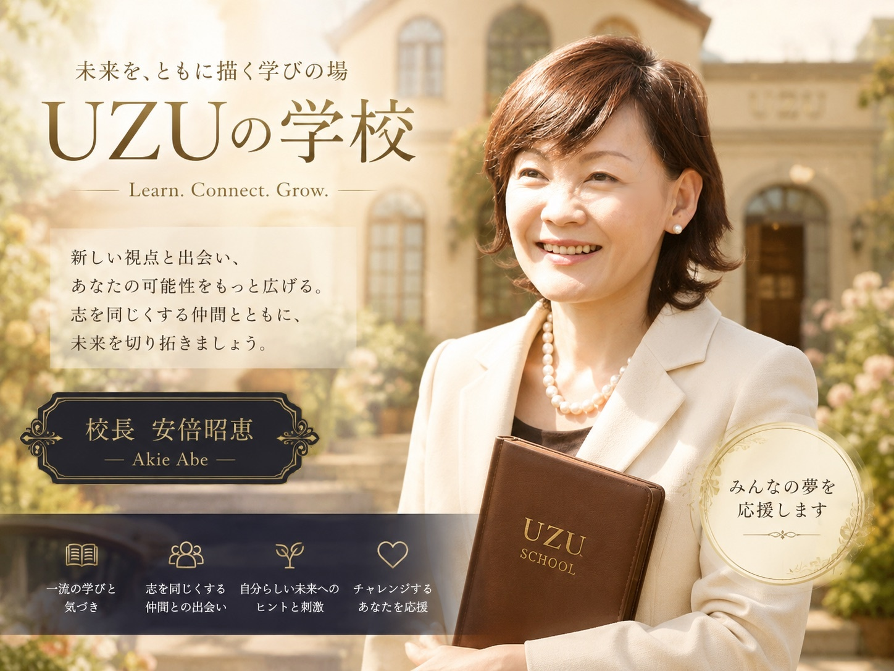
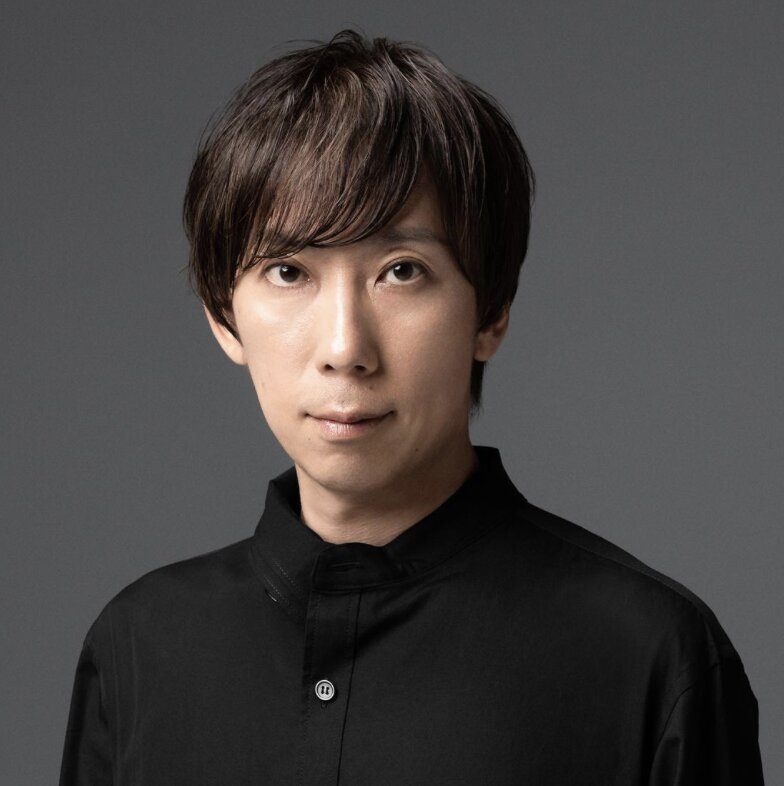
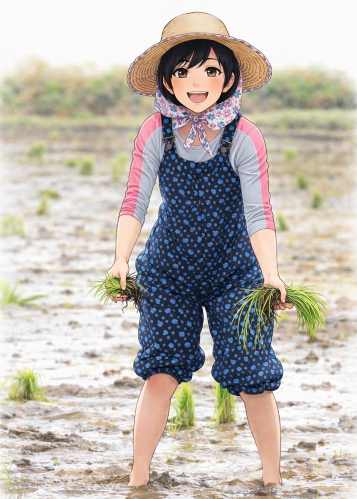

継続的な講座開催
パネルディスカッションとワークショップを継続的に行い、学びと対話の場を育てていきます。

GREETING
UZUの学校事務局 村山里美
私は長年にわたり、世界中のさまざまな国籍の仲間とともに働いてきました。
私の職場では、多様な文化や価値観を尊重し、国籍や性別に関係なく、一人ひとりが責任ある仕事に挑戦できる環境がありました。トレーニングやミーティングでは国境を越えて意見を交わし、互いの違いを認め合いながら成長していく――そんな環境の中で、多くの学びと貴重な経験を積ませていただきました。
女性が活躍できる環境にも恵まれ、私自身も責任ある仕事を任せていただきながら、やりがいと誇りを持って歩んできました。
しかし、ある時、ふと立ち止まりました。
「私はこの先、どんな人生を歩みたいのだろう。」
「本当に目標としたい人は、どんな人なのだろう。」
「会社という枠を離れたとき、私には何が残るのだろう。」
会社では責任ある役割を任せていただき、充実した毎日を送っていました。しかしその一方で、いつかは会社を卒業し、自分自身の力で新しい道を歩んでみたいという想いも、少しずつ芽生え始めていました。
だからこそ、「どんな人生を築きたいのか」「どんな人と出会い、どんな価値を社会に届けていきたいのか」を、これまで以上に真剣に考えるようになったのです。
多様性が尊重される素晴らしい環境で働いてきたからこそ、多くの価値観に触れる機会には恵まれていました。それでも、自分が心から「こんな生き方をしたい」と思えるロールモデル、特に女性の存在には、なかなか出会うことができませんでした。
そんな時、安倍昭恵校長をはじめ、多くの素晴らしい方々とのご縁をいただきました。
これまで知ることのなかった世界に触れ、多様な経験や価値観に出会い、人との出会いが人生を大きく変え、新しい可能性を広げてくれることを実感しました。
そして、自然と思うようになったのです。
「この出会いや学びを、私だけのものにするのはもったいない。」
かつての私のように、自分の可能性を広げたい方、新しい一歩を踏み出したい方、現在のご自身の事業をさらに飛躍させたい方、人生をもっと豊かにしたいと願う方々にも、このような出会いの機会を届けたい。
一人では見ることのできなかった景色も、人との出会いによって見えるようになる。
誰かとの出会いが勇気となり、その勇気が新しい挑戦を生み、その挑戦がまた誰かの背中を押していく。
そんな温かな循環が生まれる場所をつくりたいという想いから、「UZUの学校」は誕生しました。
OUR CONCEPT
「UZU」という名前は、安倍昭恵校長の想いから生まれました。
天鈿女命は、人々を笑顔で巻き込み、その場に新しい流れを生み出し、世界に再び光をもたらしたと伝えられています。その由来には、日本神話に登場する天鈿女命への想いが込められています。
私たちも、一人ひとりの想いや挑戦が、人との出会いによって大きな「渦」となり、新しいご縁や可能性を生み出していきたい。
この場所で出会った仲間が、互いに刺激を受け、支え合い、それぞれの夢や挑戦を応援し合う。
そして、その一人の挑戦が、また新しい誰かの勇気となり、さらに大きな渦へと広がっていく。
UZUの学校は、知識を学ぶだけの学校ではありません。人との出会いを通して、自分自身の可能性に気づき、一歩踏み出す勇気を見つける場所です。
ここで生まれたご縁が、それぞれの人生をより豊かに、より輝かせ、その輪が未来へとつながっていく。
そんな「人生が動き出すきっかけ」となる場所を、
皆さまとともにつくっていきたいと心から願っています。
FOR WHO
今の人生を
もっと輝かせたい方、新しい一歩を
踏み出したい方
起業や新しい挑戦を
考えている方
現在経営している事業を
次のステージへ発展させたい方
AIを味方につけ、
自分の可能性を広げたい方
女性リーダーとして
成長したい方
志の高い仲間と出会い、
人生をより豊かにしたい方
WHY UZU SCHOOL
一人ひとりの声がしっかり届く、少人数制だからこその深い対話が生まれます。
壇上からの一方通行ではなく、校長と直接言葉を交わせる近さがあります。
各分野のトップランナーと、リアルな経験や知恵を分かち合う時間があります。
聞くだけで終わらない、参加者同士が深くつながるワークショップの時間があります。
学んで終わりではなく、一歩を踏み出すための気づきと行動を後押しします。
知識だけでなく、人生を動かす出会いと気づきが、ここにはあります。
ABOUT UZU SCHOOL
「UZUの学校」は、女性の社会進出と活躍を支援するために生まれたコミュニティです。
世界各地で貴重な経験を積んできた校長 安倍昭恵が、様々な分野で活躍する女性リーダーたちを招いて、学び・対話・行動の場を創ります。
パネルディスカッションではゲストスピーカーから直接話を聞き
ワークショップではテーマに沿って参加者同士が深く対話します。
ここでの出会いと学びが、あなたの次のステップを後押しします。
はじめまして、安倍昭恵です。世界各国のリーダーたちと直接交流し、多くの貴重な経験を積んできました。無農薬のお米や地域おこしにも積極的に関わってきました。「女性が自分らしく輝ける社会」を実現するため、UZUの学校の校長として皆さんを全力で応援します。
「みんなの夢を応援します！」

SPECIAL GUEST SPEAKER
グランドデザイン代表取締役社長 ／ フューチャリスト ／ 北海道大学 客員教授
ー テクノロジーが拓く未踏の未来図を、温かな感性と圧倒的な高揚感で描き出すフューチャリスト
大手損保を経て2004年にグランドデザインを創業。買い物マッチングプラットフォーム「Gotcha! mall（ガッチャ！モール）」など、テクノロジーとクリエイティブを融合させた事業を展開し、国際的なマーケティングアワードを受賞。
沢井製薬のCM（ミライラボ篇）に出演し、AIがもたらす「未来 of オーダーメイド薬」のビジョンを提示。また、J-WAVEのラジオ番組『FUTURISM』のナビゲーターを務め、難解になりがちな最新テクノロジーの面白さを誰にでも届く言葉でナビゲート。
人工知能を用いた社会システムデザインを専門とし、数多くのAI関連特許を保有。大阪市AIガバナンスアドバイザーを務めるなど、スマートシティ構想やIR構想といった、これからのデジタル未来都市のあり方を多角的にデザインする。AI技術を活用した実業・研究で数多くの特許を持つ起業家。「AIと人間の共生」をテーマに、テクノロジーと人の可能性を融合した新しい未来を描いている。
PROGRAM
世界で体験してきた貴重なエピソードや、
女性の活躍に対する想いを語ります。
各分野の最前線で活躍するゲストスピーカーを迎え、テーマに沿ってリアルな経験と知恵を語り合います。
テーマをもとに少人数グループで対話し、
自分のビジョンや行動計画を深堀りします。
TIMETABLE
| 時 間 | 内 容 |
|---|---|
| 14:00 | 開場・受付 |
| 14:30 | オープニング ／ UZUの学校とは？ |
| 14:45 | 校長 安倍昭恵スペシャルトーク |
| 15:00 | ゲストスピーカーによるパネルディスカッション |
| 16:00 | 休憩・交流タイム |
| 16:15 | 参加者ワークショップ（少人数グループ対話） |
| 17:00 | 発表・まとめ ／ クロージング |
| 17:30 | 閉場 |
※ タイムテーブルは変更になる場合があります。

FUTURE PLANS
パネルディスカッションとワークショップを継続的に行い、学びと対話の場を育てていきます。
地域社会に貢献するボランティアを通じて、実践的な社会参加の経験を積みます。
大地と向き合い、命の大切さを体で感じる稲刈り体験。都市で生きる女性たちへの特別な贈り物。
定期的な学校開催と卒業生ネットワーク構築により、長期的な女性活躍を支援します。
JOIN US
第1回 UZUの学校は2026年8月23日（日）に開催されます
申し込み締め切りは、8月15日（土）です。
お座席に限りがあるため、お早めのお申し込みをお願い申し上げます。
参加費の詳細は、お申し込みフォームにてご確認ください。
開催場所の詳細につきましては、当選者の方へ別途ご案内いたします。